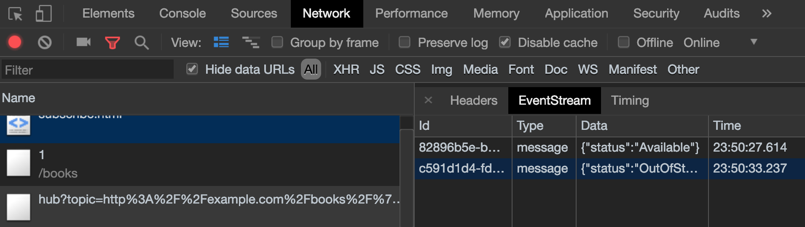

Pushing Data to Clients Using the Mercure Protocol ¶
Being able to broadcast data in real-time from servers to clients is a requirement for many modern web and mobile applications.
Creating a UI reacting in live to changes made by other users (e.g. a user changes the data currently browsed by several other users, all UIs are instantly updated), notifying the user when an asynchronous job has been completed or creating chat applications are among the typical use cases requiring "push" capabilities.
Symfony provides a straightforward component, built on top of the Mercure protocol, specifically designed for this class of use cases.
Mercure is an open protocol designed from the ground up to publish updates from server to clients. It is a modern and efficient alternative to timer-based polling and to WebSocket.
Because it is built on top Server-Sent Events (SSE), Mercure is supported out of the box in modern browsers (old versions of Edge and IE require a polyfill) and has high-level implementations in many programming languages.
Mercure comes with an authorization mechanism, automatic reconnection in case of network issues with retrieving of lost updates, a presence API, "connection-less" push for smartphones and auto-discoverability (a supported client can automatically discover and subscribe to updates of a given resource thanks to a specific HTTP header).
All these features are supported in the Symfony integration.
In this recording you can see how a Symfony web API leverages Mercure and API Platform to update in live a React app and a mobile app (React Native) generated using the API Platform client generator.
Installation ¶
Installing the Symfony Bundle ¶
Run this command to install the Mercure support:
1 |
$ composer require mercure
|
To manage persistent connections, Mercure relies on a Hub: a dedicated server that handles persistent SSE connections with the clients. The Symfony app publishes the updates to the hub, that will broadcast them to clients.
Thanks to the Docker integration of Symfony,
Flex proposes to install a Mercure hub.
Run docker-compose up to start the hub if you have chosen this option.
If you use the Symfony Local Web Server,
you must start it with the --no-tls option.
1 |
$ symfony server:start --no-tls -d
|
Running a Mercure Hub ¶

If you use the Docker integration, a hub is already up and running, and you can go straight to the next section.
Otherwise, and in production, you have to install a hub by yourself. An official and open source (AGPL) Hub based on the Caddy web server can be downloaded as a static binary from Mercure.rocks. A Docker image, a Helm chart for Kubernetes and a managed, High Availability Hub are also provided.
Configuration ¶
The preferred way to configure MercureBundle is using environment variables.
When MercureBundle has been installed, the .env file of your project
has been updated by the Flex recipe to include the available env vars.
Also, if you are using the Docker integration with the Symfony Local Web Server, Symfony Docker or the API Platform distribution, the proper environment variables have been automatically set. Skip straight to the next section.
Otherwise, set the URL of your hub as the value of the MERCURE_URL
and MERCURE_PUBLIC_URL env vars.
Sometimes a different URL must be called by the Symfony app (usually to publish),
and the JavaScript client (usually to subscribe). It's especially common when
the Symfony app must use a local URL and the client-side JavaScript code a public one.
In this case, MERCURE_URL must contain the local URL used by the
Symfony app (e.g. https://mercure/.well-known/mercure), and MERCURE_PUBLIC_URL
the publicly available URL (e.g. https://example.com/.well-known/mercure).
The clients must also bear a JSON Web Token (JWT) to the Mercure Hub to be authorized to publish updates and, sometimes, to subscribe.
This token must be signed with the same secret key as the one used by the Hub to verify the JWT (!ChangeThisMercureHubJWTSecretKey! if you use the Docker integration).
This secret key must be stored in the MERCURE_JWT_SECRET environment variable.
MercureBundle will use it to automatically generate and sign the needed JWTs.
In addition to these environment variables, MercureBundle provides a more advanced configuration:
secret: the key to use to sign the JWT - A key of the same size as the hash output (for instance, 256 bits for "HS256") or larger MUST be used. (all other options, besidealgorithm,subscribe, andpublishwill be ignored)publish: a list of topics to allow publishing to when generating the JWT (only usable whensecret, orfactoryare provided)subscribe: a list of topics to allow subscribing to when generating the JWT (only usable whensecret, orfactoryare provided)algorithm: The algorithm to use to sign the JWT (only usable whensecretis provided)provider: The ID of a service to call to provide the JWT (all other options will be ignored)factory: The ID of a service to call to create the JWT (all other options, besidesubscribe, andpublishwill be ignored)value: the raw JWT to use (all other options will be ignored)
1 2 3 4 5 6 7 8 9 10 11 12 13 |
# config/packages/mercure.yaml
mercure:
hubs:
default:
url: https://mercure-hub.example.com/.well-known/mercure
jwt:
secret: '!ChangeThisMercureHubJWTSecretKey!'
publish: ['foo', 'https://example.com/foo']
subscribe: ['bar', 'https://example.com/bar']
algorithm: 'hmac.sha256'
provider: 'My\Provider'
factory: 'My\Factory'
value: 'my.jwt'
|
Tip
The JWT payload must contain at least the following structure for the client to be allowed to publish:
1 2 3 4 5 |
{
"mercure": {
"publish": ["*"]
}
}
|
The jwt.io website is a convenient way to create and sign JWTs, checkout this example JWT. Don't forget to set your secret key properly in the bottom of the right panel of the form!
Basic Usage ¶
Publishing ¶
The Mercure Component provides an Update value object representing
the update to publish. It also provides a Publisher service to dispatch
updates to the Hub.
The Publisher service can be injected using the
autowiring in any other
service, including controllers:
1 2 3 4 5 6 7 8 9 10 11 12 13 14 15 16 17 18 19 20 21 22 |
// src/Controller/PublishController.php
namespace App\Controller;
use Symfony\Bundle\FrameworkBundle\Controller\AbstractController;
use Symfony\Component\HttpFoundation\Response;
use Symfony\Component\Mercure\HubInterface;
use Symfony\Component\Mercure\Update;
class PublishController extends AbstractController
{
public function publish(HubInterface $hub): Response
{
$update = new Update(
'https://example.com/books/1',
json_encode(['status' => 'OutOfStock'])
);
$hub->publish($update);
return new Response('published!');
}
}
|
The first parameter to pass to the Update constructor is
the topic being updated. This topic should be an IRI
(Internationalized Resource Identifier, RFC 3987): a unique identifier
of the resource being dispatched.
Usually, this parameter contains the original URL of the resource transmitted to the client, but it can be any string or IRI, and it doesn't have to be a URL that exists (similarly to XML namespaces).
The second parameter of the constructor is the content of the update. It can be anything, stored in any format. However, serializing the resource in a hypermedia format such as JSON-LD, Atom, HTML or XML is recommended.
Subscribing ¶
Subscribing to updates in JavaScript from a Twig template is straightforward:
1 2 3 4 5 6 7 |
<script>
const eventSource = new EventSource("{{ mercure('https://example.com/books/1')|escape('js') }}");
eventSource.onmessage = event => {
// Will be called every time an update is published by the server
console.log(JSON.parse(event.data));
}
</script>
|
The mercure() Twig function generates the URL of the Mercure hub
according to the configuration. The URL includes the topic query
parameters corresponding to the topics passed as first argument.
If you want to access to this URL from an external JavaScript file, generate the URL in a dedicated HTML element:
1 2 3 |
<script type="application/json" id="mercure-url">
{{ mercure('https://example.com/books/1')|json_encode(constant('JSON_UNESCAPED_SLASHES') b-or constant('JSON_HEX_TAG'))|raw }}
</script>
|
Then retrieve it from your JS file:
1 2 3 |
const url = JSON.parse(document.getElementById("mercure-url").textContent);
const eventSource = new EventSource(url);
// ...
|
Mercure also allows subscribing to several topics,
and to use URI Templates or the special value * (matched by all topics)
as patterns:
1 2 3 4 5 6 7 8 9 10 11 12 |
<script>
{# Subscribe to updates of several Book resources and to all Review resources matching the given pattern #}
const eventSource = new EventSource("{{ mercure([
'https://example.com/books/1',
'https://example.com/books/2',
'https://example.com/reviews/{id}'
])|escape('js') }}");
eventSource.onmessage = event => {
console.log(JSON.parse(event.data));
}
</script>
|
Tip
Google Chrome DevTools natively integrate a practical UI displaying in live the received events:
To use it:
- open the DevTools
- select the "Network" tab
- click on the request to the Mercure hub
- click on the "EventStream" sub-tab.
Tip
Test if a URI Template match a URL using the online debugger
Discovery ¶
The Mercure protocol comes with a discovery mechanism.
To leverage it, the Symfony application must expose the URL of the Mercure Hub
in a Link HTTP header.

You can create Link headers with the Discovery helper class
(under the hood, it uses the WebLink Component):
1 2 3 4 5 6 7 8 9 10 11 12 13 14 15 16 17 18 19 20 21 |
// src/Controller/DiscoverController.php
namespace App\Controller;
use Symfony\Bundle\FrameworkBundle\Controller\AbstractController;
use Symfony\Component\HttpFoundation\JsonResponse;
use Symfony\Component\HttpFoundation\Request;
use Symfony\Component\Mercure\Discovery;
class DiscoverController extends AbstractController
{
public function discover(Request $request, Discovery $discovery): JsonResponse
{
// Link: <https://hub.example.com/.well-known/mercure>; rel="mercure"
$discovery->addLink($request);
return $this->json([
'@id' => '/books/1',
'availability' => 'https://schema.org/InStock',
]);
}
}
|
Then, this header can be parsed client-side to find the URL of the Hub, and to subscribe to it:
1 2 3 4 5 6 7 8 9 10 11 12 13 14 |
// Fetch the original resource served by the Symfony web API
fetch('/books/1') // Has Link: <https://hub.example.com/.well-known/mercure>; rel="mercure"
.then(response => {
// Extract the hub URL from the Link header
const hubUrl = response.headers.get('Link').match(/<([^>]+)>;\s+rel=(?:mercure|"[^"]*mercure[^"]*")/)[1];
// Append the topic(s) to subscribe as query parameter
const hub = new URL(hubUrl, window.origin);
hub.searchParams.append('topic', 'https://example.com/books/{id}');
// Subscribe to updates
const eventSource = new EventSource(hub);
eventSource.onmessage = event => console.log(event.data);
});
|
Authorization ¶
Mercure also allows dispatching updates only to authorized clients.
To do so, mark the update as private by setting the third parameter
of the Update constructor to true:
1 2 3 4 5 6 7 8 9 10 11 12 13 14 15 16 17 18 19 20 21 22 23 24 |
// src/Controller/Publish.php
namespace App\Controller;
use Symfony\Bundle\FrameworkBundle\Controller\AbstractController;
use Symfony\Component\HttpFoundation\Response;
use Symfony\Component\Mercure\Update;
class PublishController extends AbstractController
{
public function publish(HubInterface $hub): Response
{
$update = new Update(
'https://example.com/books/1',
json_encode(['status' => 'OutOfStock']),
true // private
);
// Publisher's JWT must contain this topic, a URI template it matches or * in mercure.publish or you'll get a 401
// Subscriber's JWT must contain this topic, a URI template it matches or * in mercure.subscribe to receive the update
$hub->publish($update);
return new Response('private update published!');
}
}
|
To subscribe to private updates, subscribers must provide to the Hub a JWT containing a topic selector matching by the topic of the update.
To provide this JWT, the subscriber can use a cookie,
or an Authorization HTTP header.
Cookies can be set automatically by Symfony by passing the appropriate options
to the mercure() Twig function. Cookies set by Symfony are automatically
passed by the browsers to the Mercure hub if the withCredentials attribute
of the EventSource class is set to true. Then, the Hub verifies the
validity of the provided JWT, and extract the topic selectors from it.
1 2 3 4 5 |
<script>
const eventSource = new EventSource("{{ mercure('https://example.com/books/1', { subscribe: 'https://example.com/books/1' })|escape('js') }}", {
withCredentials: true
});
</script>
|
The supported options are:
subscribe: the list of topic selectors to include in themercure.subscribeclaim of the JWTpublish: the list of topic selectors to include in themercure.publishclaim of the JWTadditionalClaims: extra claims to include in the JWT (expiration date, token ID...)
Using cookies is the most secure and preferred way when the client is a web browser. If the client is not a web browser, then using an authorization header is the way to go.
Caution
To use the cookie authentication method, the Symfony app and the Hub must be served from the same domain (can be different sub-domains).
Tip
The native implementation of EventSource doesn't allow specifying headers. For example, authorization using a Bearer token. In order to achieve that, use a polyfill
1 2 3 4 5 6 7 |
<script>
const es = new EventSourcePolyfill("{{ mercure('https://example.com/books/1') }}", {
headers: {
'Authorization': 'Bearer ' + token,
}
});
</script>
|
Programmatically Setting The Cookie ¶
Sometimes, it can be convenient to set the authorization cookie from your code
instead of using the Twig function. MercureBundle provides a convenient service,
Authorization, to do so.
In the following example controller, the added cookie contains a JWT, itself containing the appropriate topic selector.
And here is the controller:
1 2 3 4 5 6 7 8 9 10 11 12 13 14 15 16 17 18 19 20 21 22 |
// src/Controller/DiscoverController.php
namespace App\Controller;
use Symfony\Bundle\FrameworkBundle\Controller\AbstractController;
use Symfony\Component\HttpFoundation\JsonResponse;
use Symfony\Component\HttpFoundation\Request;
use Symfony\Component\Mercure\Authorization;
use Symfony\Component\Mercure\Discovery;
class DiscoverController extends AbstractController
{
public function publish(Request $request, Discovery $discovery, Authorization $authorization): JsonResponse
{
$discovery->addLink($request);
$authorization->setCookie($request, ['https://example.com/books/1']);
return $this->json([
'@id' => '/demo/books/1',
'availability' => 'https://schema.org/InStock'
]);
}
}
|
Tip
You cannot use the mercure() helper and the setCookie()
method at the same time (it would set the cookie twice on a single request). Choose
either one method or the other.
Programmatically Generating The JWT Used to Publish ¶
Instead of directly storing a JWT in the configuration,
you can create a token provider that will return the token used by
the HubInterface object:
1 2 3 4 5 6 7 8 9 10 11 12 |
// src/Mercure/MyTokenProvider.php
namespace App\Mercure;
use Symfony\Component\Mercure\Jwt\TokenProviderInterface;
final class MyTokenProvider implements TokenProviderInterface
{
public function getJwt(): string
{
return 'the-JWT';
}
}
|
Then, reference this service in the bundle configuration:
1 2 3 4 5 6 7 |
# config/packages/mercure.yaml
mercure:
hubs:
default:
url: https://mercure-hub.example.com/.well-known/mercure
jwt:
provider: App\Mercure\MyTokenProvider
|
This method is especially convenient when using tokens having an expiration date, that can be refreshed programmatically.
Web APIs ¶
When creating a web API, it's convenient to be able to instantly push new versions of the resources to all connected devices, and to update their views.
API Platform can use the Mercure Component to dispatch updates automatically, every time an API resource is created, modified or deleted.
Start by installing the library using its official recipe:
1 |
$ composer require api
|
Then, creating the following entity is enough to get a fully-featured hypermedia API, and automatic update broadcasting through the Mercure hub:
1 2 3 4 5 6 7 8 9 10 11 12 13 14 15 16 17 |
// src/Entity/Book.php
namespace App\Entity;
use ApiPlatform\Core\Annotation\ApiResource;
use Doctrine\ORM\Mapping as ORM;
#[ApiResource(mercure: true)]
#[ORM\Entity]
class Book
{
#[ORM\Id]
#[ORM\Column]
public string $name = '';
#[ORM\Column]
public string $status = '';
}
|
As showcased in this recording, the API Platform Client Generator also allows to scaffold complete React and React Native applications from this API. These applications will render the content of Mercure updates in real-time.
Checkout the dedicated API Platform documentation to learn more about its Mercure support.
Testing ¶
During unit testing it's usually not needed to send updates to Mercure.
You can instead make use of the `MockHub` class:
1 2 3 4 5 6 7 8 9 10 11 12 13 14 15 16 17 18 19 20 21 22 23 24 |
// tests/FunctionalTest.php
namespace App\Tests\Unit\Controller;
use App\Controller\MessageController;
use Symfony\Component\Mercure\HubInterface;
use Symfony\Component\Mercure\JWT\StaticTokenProvider;
use Symfony\Component\Mercure\MockHub;
use Symfony\Component\Mercure\Update;
class MessageControllerTest extends TestCase
{
public function testPublishing()
{
$hub = new MockHub('https://internal/.well-known/mercure', new StaticTokenProvider('foo'), function(Update $update): string {
// $this->assertTrue($update->isPrivate());
return 'id';
});
$controller = new MessageController($hub);
// ...
}
}
|
For functional testing, you can instead create a stub of the Hub:
1 2 3 4 5 6 7 8 9 10 11 12 13 14 15 |
// tests/Functional/Stub/HubStub.php
namespace App\Tests\Functional\Stub;
use Symfony\Component\Mercure\HubInterface;
use Symfony\Component\Mercure\Update;
class HubStub implements HubInterface
{
public function publish(Update $update): string
{
return 'id';
}
// implement rest of HubInterface methods here
}
|
Use HubStub to replace the default hub service so no updates are actually
sent:
1 2 3 |
# config/services_test.yaml
mercure.hub.default:
class: App\Tests\Functional\Stub\HubStub
|
As MercureBundle support multiple hubs, you may have to replace the other service definitions accordingly.
Tip
Symfony Panther has a feature to test applications using Mercure.
Debugging ¶
0.2
The WebProfiler panel was introduced in MercureBundle 0.2.
Enable the panel in your configuration, as follows:
MercureBundle is shipped with a debug panel. Install the Debug pack to enable it:
1 |
$ composer require --dev symfony/debug-pack
|
Async dispatching ¶
Tip
Async dispatching is discouraged. Most Mercure hubs already handle publications asynchronously and using Messenger is usually not necessary.
Instead of calling the Publisher service directly, you can also let Symfony
dispatching the updates asynchronously thanks to the provided integration with
the Messenger component.
First, be sure to install the Messenger component and to configure properly a transport (if you don't, the handler will be called synchronously).
Then, dispatch the Mercure Update to the Messenger's Message Bus,
it will be handled automatically:
1 2 3 4 5 6 7 8 9 10 11 12 13 14 15 16 17 18 19 20 21 22 23 |
// src/Controller/PublishController.php
namespace App\Controller;
use Symfony\Bundle\FrameworkBundle\Controller\AbstractController;
use Symfony\Component\HttpFoundation\Response;
use Symfony\Component\Mercure\Update;
use Symfony\Component\Messenger\MessageBusInterface;
class PublishController extends AbstractController
{
public function publish(MessageBusInterface $bus): Response
{
$update = new Update(
'https://example.com/books/1',
json_encode(['status' => 'OutOfStock'])
);
// Sync, or async (Doctrine, RabbitMQ, Kafka...)
$bus->dispatch($update);
return new Response('published!');
}
}
|
Going further ¶
- The Mercure protocol is also supported by the Notifier component. Use it to send push notifications to web browsers.
- Symfony UX Turbo is a library using Mercure to provide the same experience as with Single Page Applications but without having to write a single line of JavaScript!